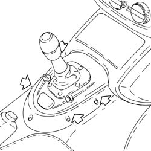
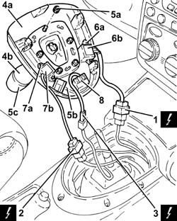

2127A16 PANEL OF CONTROL LEVER FOR MANUAL GEARBOX WITH HYDRAULIC SELECTION - R R
- Path
- Procedures > 21 GEARBOX UNIT > 2127 HYDRAULIC TRANSMISSION EXTERNAL LINKAGE > 2127A HYDRAULIC TRANSMISSION EXTERNAL LINKAGE > 2127A16 PANEL OF CONTROL LEVER FOR MANUAL GEARBOX WITH HYDRAULIC SELECTION - R R
- Kind
- repair procedure (removal / refitting; the operation number is the code)
- Applies to
- engines: 2.0 JTS; all production periods; only with equipment: Smart gearbox
- Interactive page
- https://sloeber94.github.io/elrnDB-aGt/en/#/125001274
Applies to: engines: 2.0 JTS; all production periods
 Removing
Removing
 Refitting
Refitting- Make sure that the ignition key is in the OFF position, then disconnect the battery terminal (-).
Description | Connector | |
|---|---|---|
- | Battery | See A001 Battery |
- Release the clips fastening the electro-hydraulic selection manual gearbox control lever trim.

Applies to: engines: 2.0 JTS; all production periods
- Release the electro-hydraulic selection manual gearbox control lever trim complete with lever.
1. Disconnect the electrical connection.
Description | Connector | |
|---|---|---|
1 | CITY function switch | See H39 CITY FUNCTION SWITCH |
2. Disconnect the electrical connection.
3. Disconnect the electrical connection.
4. Remove the electro-hydraulic selection manual gearbox control lever trim (4a) complete with lever (4b).
5. At the bench, undo the bolts (5a) and separate the electro-hydraulic selection manual gearbox control lever trim (5b) from the lever (5c).
6. Undo the bolts (6a) and remove the CITY switch (6b) from the trim.
7. Undo the bolts (7a) and remove the SPORT switch (7b) from the trim.
8. Remove the trim LED.

Applies to: engines: 2.0 JTS; all production periods
Refitting
Removing- Place the trim LED back in its housing.
- Place the SPORT switch back in its housing and fasten it using the bolts.
- Place the CITY switch back in its housing and fasten it using the bolts.
- Assemble the electro-hydraulic selection manual gearbox control lever trim and the lever and secure them using the bolts.
- Connect the electrical connections.
- Place the electro-hydraulic selection manual gearbox control lever trim back in its housing complete with lever and secure them using the clips.
- Connect the negative battery terminal (-).